08/09/2025 — Bệnh nhân 80 tuổi đau ngực và QRS rộng. Có nên dùng thuốc tiêu sợi huyết?
Bản dịch tiếng Việt của bài "An 80-year-old with chest pain and a wide QRS. Should you give thrombolytics?" – Dr. Smith’s ECG Blog. Giữ nguyên toàn bộ 14 hình ảnh và 1 video của bản gốc.
Tác giả: Magnus Nossen
Bệnh nhân hôm nay là một người đàn ông 80 tuổi mắc bệnh thận mạn (CKD) giai đoạn 5 nhưng chưa lọc máu. Tiền sử gồm tăng huyết áp và nhồi máu cơ tim cũ, đã được can thiệp mạch vành qua da (PCI) đặt stent một nhánh bờ của động mạch mũ trái (LCx). Ông gọi đội cấp cứu ngoài viện sau khi đột ngột đau ngực, mức độ 8/10, kèm khó thở. Điện tâm đồ trước viện dưới đây được ghi 25 phút sau khi khởi phát triệu chứng.
Bạn nghĩ gì về điện tâm đồ này và tình huống lâm sàng — và bạn sẽ xử trí bệnh nhân này thế nào?
Điện tâm đồ trước viện (điện tâm đồ #1)

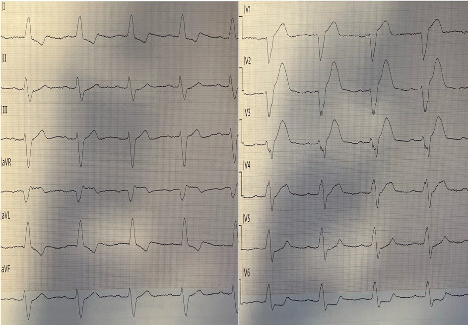
Ban đầu được ghi với tốc độ giấy 50mm/s. Hình trên đã được nén theo trục X để trông như được ghi ở 25mm/s. Bố trí chuyển đạo chuẩn.
Diễn giải
Nhịp ở điện tâm đồ #1 là nhịp xoang, tần số tim 67 lần/phút. QRS rộng khoảng 160ms và phù hợp với LBBB. ST chênh lên (ngược hướng) tối đa ở chuyển đạo V2, đo được 4 mm, với sóng S đi trước sâu 11 mm. Không có đoạn ST nào đồng hướng.

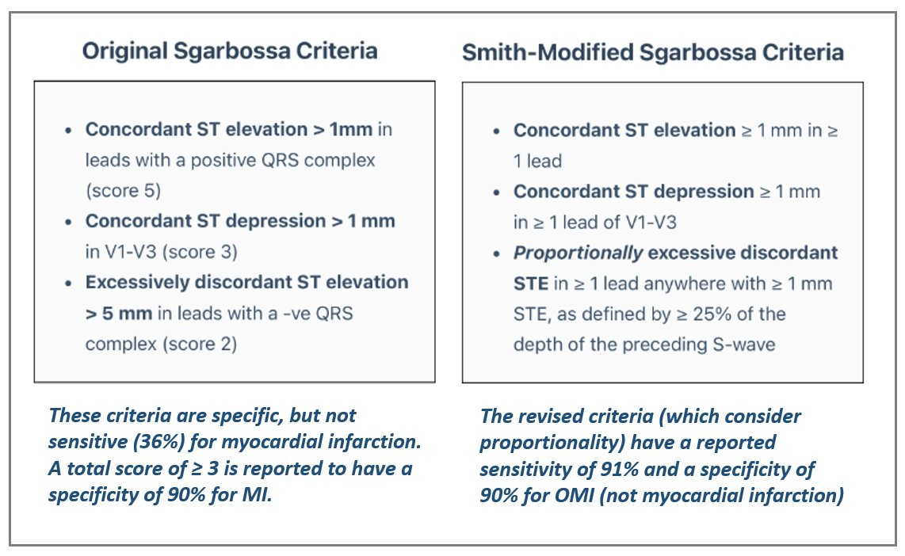
Một LBBB được cho là mới xuất hiện không dự báo tắc động mạch vành cấp (1) và chụp mạch vành (CAG) thường quy không còn được thực hiện cho nhóm bệnh nhân này nữa. Điện tâm đồ ban đầu trong ca hôm nay cũng không thỏa bất kỳ tiêu chuẩn Sgarbossa nguyên bản nào — vốn được xây dựng để phát hiện nhồi máu cơ tim cấp trong bối cảnh LBBB. Theo hệ thống tính điểm nguyên bản, vốn có trọng số (một số đặc điểm quan trọng hơn các đặc điểm khác), cần tổng cộng từ 3 điểm trở lên mới cho kết quả dương tính. ST chênh lên quá mức đơn độc ở các chuyển đạo trước tim chỉ được 2 điểm, chưa đạt ngưỡng. Hạn chế này giải thích độ nhạy kém của bộ tiêu chuẩn nguyên bản, dẫn đến bỏ sót nhiều ca nhồi máu cơ tim do tắc (OMI) động mạch LAD. Ngay cả khi ST chênh lên ở chuyển đạo V2 vượt quá 5 mm, điện tâm đồ này vẫn bị xếp là Sgarbossa âm tính theo bộ tiêu chuẩn nguyên bản.
Ngay cả khi dùng tiêu chuẩn Sgarbossa nguyên bản không trọng số, không tiêu chuẩn nào trong 3 tiêu chuẩn được thỏa.
Tuy nhiên, điện tâm đồ này có giá trị chẩn đoán tắc cấp động mạch LAD trong bối cảnh LBBB. Có các sóng T tối cấp nổi bật ở các chuyển đạo trước tim. Những dấu hiệu này vẫn nhận ra được ngay cả khi có blốc nhánh trái. Hơn nữa, nhiều đoạn ST ngược hướng quá mức xét theo tỷ lệ. Áp dụng tiêu chuẩn Sgarbossa cải biên theo Smith (Smith-modified Sgarbossa criteria), sóng S ở chuyển đạo V2 sâu 11 mm — và ST chênh lên ở V2 là 4 mm, cho tỷ số ST/S là 0.36. Giá trị này vượt ngưỡng chẩn đoán (≥0.25), khiến nó vừa có độ đặc hiệu vừa có độ nhạy cao trong nhận diện nhồi máu cơ tim do tắc (OMI) ở bệnh nhân LBBB.
Smith: Chỉ cần một chuyển đạo đạt hoặc vượt ngưỡng là đủ. Hơn nữa, nếu dùng ngưỡng 20% cho ST chênh lên ngược hướng quá mức xét theo tỷ lệ, độ nhạy cao hơn mà độ đặc hiệu vẫn rất cao. Tôi dùng 20%. Hơn nữa, bất kỳ tỷ số nào lớn hơn 15% đều rất bất thường và không nên bỏ qua.
Queen of Hearts không dùng tiêu chuẩn Sgarbossa cải biên theo Smith theo đúng nghĩa đen, nhưng như bạn có thể thấy dưới đây — mô hình AI đã nhận diện đúng OMI cấp trong bối cảnh LBBB.
Kết quả đọc của QoH

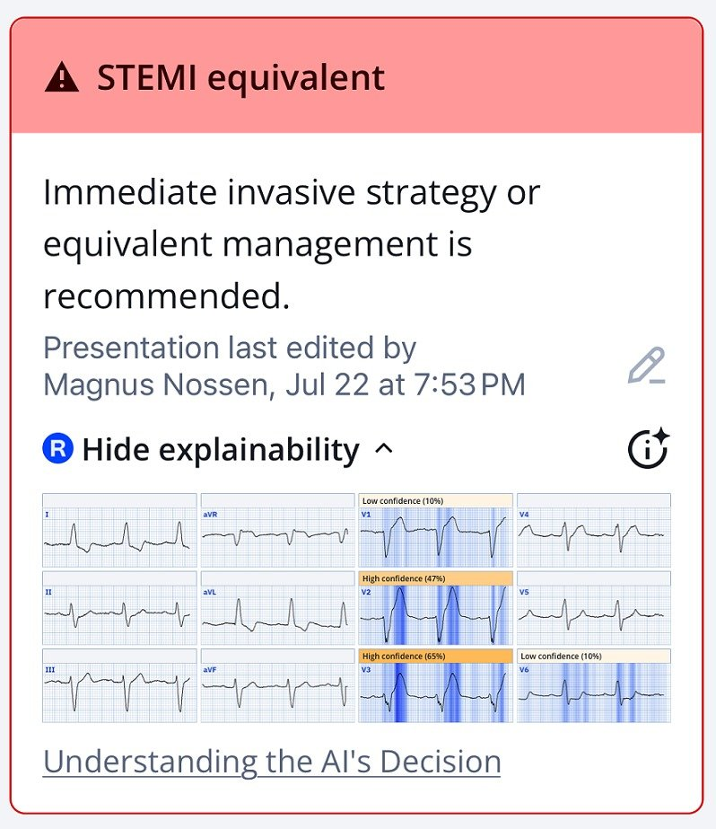
Khả năng giải thích của AI ở các chuyển đạo trước tim

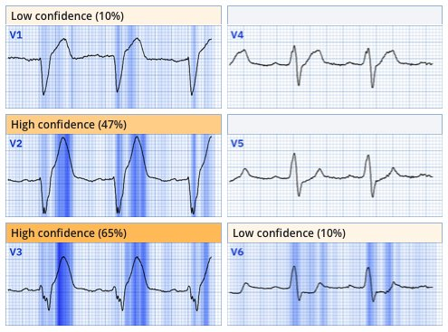
Ứng dụng PMcardio for Individuals 3.0 mới nay đã có mô hình Queen of Hearts mới nhất và khả năng giải thích của AI (bản đồ nhiệt màu xanh lam)! Tải ngay cho iOS hoặc Android. https://www.powerfulmedical.com/pmcardio-individuals/ (BS. Smith và BS. Meyers đã huấn luyện mô hình AI và là cổ đông của Powerful Medical).
Kết cục
Đội cấp cứu ngoài viện (EMS) gửi điện tâm đồ này cho tôi và tôi lập tức nhận ra tắc cấp động mạch LAD trong bối cảnh LBBB. Thời gian vận chuyển bệnh nhân này đến cơ sở có PCI là > 2 giờ, vì vậy đã chỉ định tiêu sợi huyết. EMS đã dùng thuốc tiêu sợi huyết trong vòng 16 phút sau điện tâm đồ ban đầu và 41 phút sau khởi phát triệu chứng. Trong khoảng 5 phút sau khi được điều trị tiêu sợi huyết — triệu chứng của bệnh nhân cải thiện, và chuỗi điện tâm đồ sau đây được ghi lại. Các điện tâm đồ này đặc biệt thú vị, minh họa sự biến mất của blốc nhánh trái hoàn toàn khi tái tưới máu và cho thấy điện tâm đồ cải thiện dần trong 30 phút tiếp theo, bao gồm sự thoái lui của sóng T tối cấp và sự xuất hiện của TWI (sóng T đảo ngược).
Smith: thuốc tiêu sợi huyết có nguy cơ cao hơn đáng kể so với chụp mạch. Thứ nhất, chụp mạch có thể loại trừ OMI trong những trường hợp không chắc chắn. Thứ hai, nếu OMI được xác nhận, thì PCI an toàn hơn nhiều so với tiêu sợi huyết, vốn có nguy cơ đáng kể gây xuất huyết nội sọ và các chảy máu khác.
Điện tâm đồ # 2 ghi 11 phút sau điều trị tiêu sợi huyết.

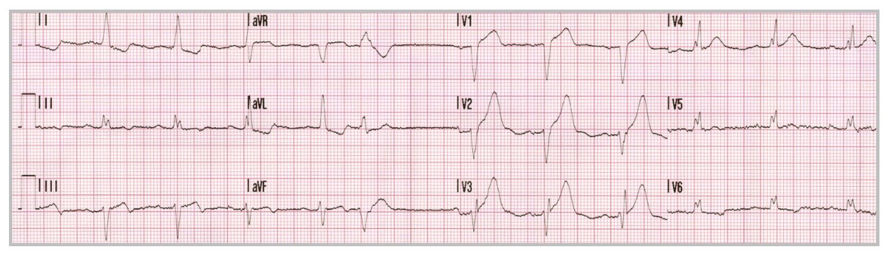
Điện tâm đồ # 3 ghi 15 phút sau điều trị tiêu sợi huyết

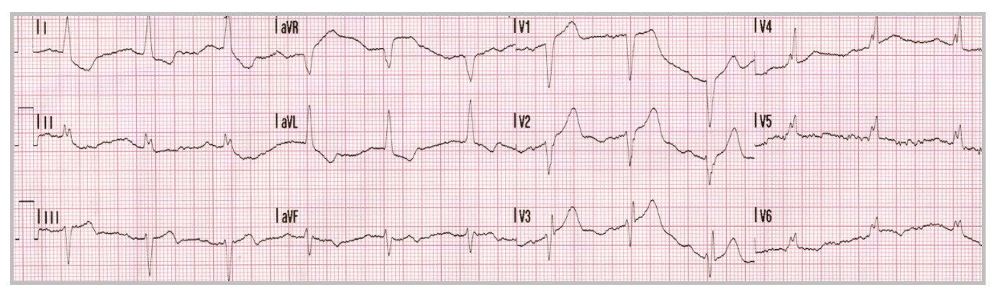
Điện tâm đồ # 4 ghi 21 phút sau điều trị tiêu sợi huyết

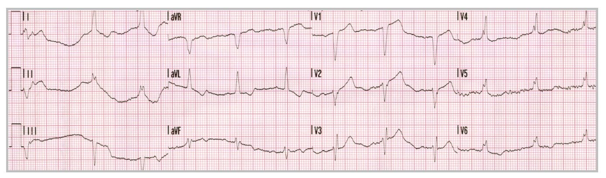
Điện tâm đồ # 5 ghi 26 phút sau điều trị tiêu sợi huyết

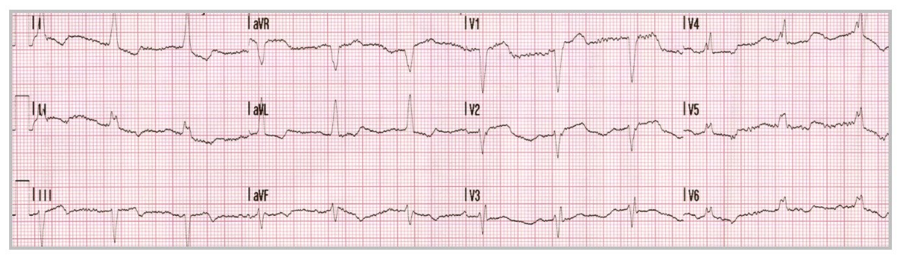
Bệnh nhân này được điều trị tiêu sợi huyết nhanh chóng sau khi được chẩn đoán OMI. Thuốc tiêu sợi huyết hiệu quả nhất khi dùng sớm sau khởi phát triệu chứng, trùng với khoảng thời gian có lợi ích lớn nhất. Như BS. Smith đã nhiều lần nhấn mạnh, Thời gian là cơ tim! Khái niệm này được minh họa trong biểu đồ dưới đây.
Mối liên quan theo thời gian giữa thời gian và lượng cơ tim còn cứu được ở bệnh nhân nhồi máu cơ tim do tắc

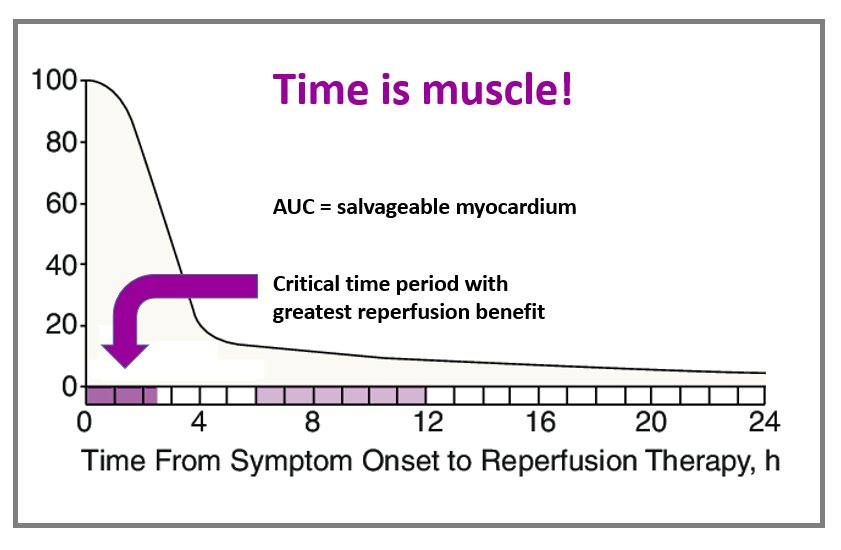
Biểu đồ được công bố lần đầu tại đây:
Gersh BJ, Stone GW, White HD, Holmes DR Jr. Pharmacological facilitation of primary percutaneous coronary intervention for acute myocardial infarction: is the slope of the curve the shape of the future? JAMA [Internet] 2005;293(8):979–86. Available from: http://www.ncbi.nlm.nih.gov/entrez/query.fcgi?cmd=Retrieve&db=PubMed&dopt=Citation&list_uids=15728169Bệnh nhân hết đau sau điều trị tiêu sợi huyết. Trong thời gian nằm viện, bệnh nhân được chụp mạch vành, không thấy huyết khối hay hẹp đáng kể nào. Kết quả này không hiếm gặp sau điều trị tiêu sợi huyết kịp thời, vì điều trị nhanh có thể làm tan huyết khối trước khi chụp mạch.
Sau đó đã dùng chẩn đoán hình ảnh trong lòng mạch, xác định được tổn thương thủ phạm có nứt vỡ mảng xơ vữa ở đoạn gần của LAD "vòng qua mỏm", được điều trị bằng đặt stent. Troponin T đạt đỉnh 8199 ng/L — một giá trị tăng rõ rệt mà trong bối cảnh này nhiều khả năng phản ánh tái tưới máu nhanh và sự “rửa trôi” (wash-out) Troponin nhanh. Siêu âm tim cho thấy các dấu hiệu điển hình của nhồi máu vùng LAD, như dưới đây.
Mặt cắt tập trung vào thất trái từ cửa sổ mỏm
Giảm động rõ ở vùng vách giữa đến xa và vùng mỏm của thất trái. Vẫn chưa rõ bao nhiêu phần giảm động quan sát được là do choáng cơ tim (myocardial stunning) (đánh giá theo dõi bằng siêu âm tim lại sẽ trả lời câu hỏi này).
Bàn luận
Hiểu rõ tiêu chuẩn Sgarbossa cải biên theo Smith có thể hỗ trợ rất nhiều trong việc ra các quyết định then chốt cho bệnh nhân ACS nguy cơ cao. Thuật toán AI Queen of Hearts là một công cụ mạnh để chẩn đoán thiếu máu cục bộ, và không bị giới hạn bởi quan niệm truyền thống rằng không thể phát hiện thiếu máu cục bộ khi nhịp có QRS rộng. Thực tế, Queen of Hearts đã nhận định điện tâm đồ ban đầu trong ca hôm nay là chỉ điểm nhồi máu cơ tim do tắc (OMI) với độ tin cậy rất cao.

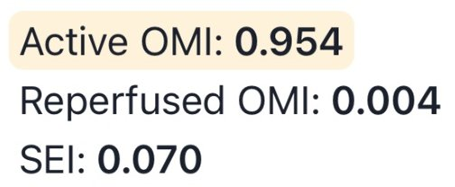
Mô hình AI cho kết quả OMI đang diễn ra là 0,954, rất cao và tương ứng với độ đặc hiệu cho OMI cao hơn hẳn 98%. Queen of Hearts không thấy dấu hiệu tái tưới máu hay thiếu máu cục bộ dưới nội tâm mạc, thể hiện qua các giá trị đầu ra lần lượt là 0,004 và 0,070.
Điện tâm đồ # 6, ghi một ngày sau PCI

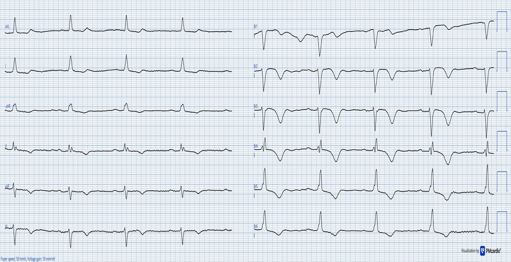
Smith: điều này cho thấy, ngay cả khi có LBBB, vẫn có sóng T tái tưới máu. Sóng Wellens có thể thấy cả trong LBBB lẫn nhịp tạo nhịp (máy tạo nhịp).
Bệnh nhân trong ca hôm nay có diễn tiến nằm viện không biến chứng. Dự kiến siêu âm tim theo dõi để đánh giá mức độ giảm động là do choáng cơ tim.
Những điểm cần học:
- Bản thân một LBBB được cho là mới xuất hiện là yếu tố dự báo kém cho OMI cấp. QoH hoặc tiêu chuẩn Sgarbossa cải biên theo Smith sẽ giúp bạn đánh giá xem bệnh nhân đau ngực có LBBB của mình có thể cần tiêu sợi huyết hay PCI thì đầu hay không.
- Điều trị tiêu sợi huyết hiệu quả nhất khi dùng kịp thời — và nên được cân nhắc cho mọi bệnh nhân OMI không thể đến phòng thông tim trong vòng 90 phút.
- Tái tưới máu muộn thường dẫn đến mất cơ tim đáng kể, đó là lý do việc phát hiện OMI cần dựa vào điện tâm đồ (không dựa vào troponin)
- Nhắc lại: thuốc tiêu sợi huyết có nguy cơ cao hơn đáng kể so với chụp mạch. Thứ nhất, chụp mạch có thể loại trừ OMI trong những trường hợp không chắc chắn. Thứ hai, nếu OMI được xác nhận, thì PCI an toàn hơn nhiều so với tiêu sợi huyết, vốn có nguy cơ đáng kể gây xuất huyết nội sọ và các chảy máu khác.
- Thuốc tiêu sợi huyết đã được chứng minh có lợi ở bệnh nhân nghi nhồi máu cơ tim kèm LBBB trong phân tích gộp FTT collaborative. Điều đó không cần bất kỳ dấu hiệu đặc hiệu nào (không dùng tiêu chuẩn Sgarbossa cải biên (MSC). Đây là một ca chậm dẫn truyền trong thất vừa đủ thỏa MSC, được dùng tiêu sợi huyết và đã tái tưới máu. Và đây là điện tâm đồ của ca đó:

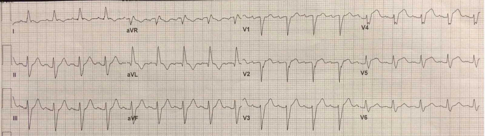
Bạn có thể thấy tỷ số ST/S ở V4 lớn hơn 25%. Hơn nữa, V5 có sóng R lớn bằng sóng S (QRS đẳng điện), và do đó LẼ RA phải có đoạn ST đẳng điện (không chênh lên cũng không chênh xuống). Việc có BẤT KỲ mức ST chênh lên nào cũng đủ chẩn đoán OMI động mạch LAD.
Đây là kết quả đọc của Queen (đầu ra là 0.95, tức độ đặc hiệu lớn hơn 98%):

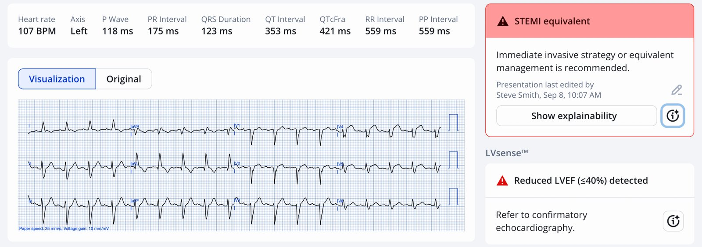
Tài liệu tham khảo
- Chang, A. M. et.al. (2009). Lack of association between left bundle-branch block and acute myocardial infarction in symptomatic ED patients. The American Journal of Emergency Medicine, 27(8), 916–921. https://doi.org/10.1016/j.ajem.2008.07.007
- Smith, S. W. et. al . Diagnosis of ST-Elevation myocardial infarction in the presence of left bundle branch block with the ST-Elevation to S-Wave ratio in a modified Sgarbossa rule. Annals of Emergency Medicine, 60(6), 766-76. https://doi.org/10.1016/j.annemergmed.2012.07.119
- Neeland, I. J., et. al. (2012). Evolving considerations in the management of patients with left bundle branch block and suspected myocardial infarction. Journal of the American College of Cardiology, 60(2), 96–105. https://doi.org/10.1016/j.jacc.2012.02.054
- Brown, A. J. et. al (2018). Prehospital diagnosis and management of acute myocardial infarction. In Springer eBooks (pp. 15–29). https://doi.org/10.1007/978-981-13-1114-7_2
Meyers HP, Limkakeng AT Jr, Jaffa EJ, et al. Validation of the modified Sgarbossa criteria for acute coronary occlusion in the setting of left bundle branch block: A retrospective case-control study. Am Heart J [Internet] 2015;170(6):1255–64. Available from: http://dx.doi.org/10.1016/j.ahj.2015.09.005Dodd KW, Zvosec DL, Hart MA, et al. Electrocardiographic Diagnosis of Acute Coronary Occlusion Myocardial Infarction in Ventricular Paced Rhythm Using the Modified Sgarbossa Criteria. Ann Emerg Med [Internet] 2021;Available from: http://dx.doi.org/10.1016/j.annemergmed.2021.03.036
= = =
======================================
MY Comment, by KEN GRAUER, MD (9/8/2025):
Today’s post by Dr. Nossen addresses the issue of assessing the patient with new CP (Chest Pain) and LBBB. Dr. Smith’s ECG Blog features many examples of this clinical entity (See My Comments in the January 23, 2025 post — the September 17, 2020 post and the April 7, 2019 post, among others).
The “beauty” of today’s case lies with the expeditious diagnosis and amazingly rapid initiation of thrombolytic therapy within 16 minutes after the initial ECG was recorded! (and within 41 minutes after the onset of symptoms!).
- Attestation to the benefit of such exemplary management was evidenced by: i) Symptom improvement in today’s case within 5 minutes of receiving thrombolytic therapy; and, ii) Ongoing dramatic improvement of acute ST-T wave abnormalities over the next 30 minutes on serial ECGs.
- KEY Point: Today’s case demonstrates that prompt initiation of thrombolytic therapy (especially if administered within the 1st hour after the onset of symptoms) — may result in dramatic clinical improvement with preservation of myocardium and cardiac function.
= = =
Another LOOK at the Initial ECG:
For clarity in Figure-1 — I’ve reproduced and labeled today’s initial ECG. I’ll highlight the following findings:
- The rhythm in ECG #1 is sinus. There is 1st-degree AV block ( = PR interval ~0.22 second). The QRS complex is markedly widened ( = 0.16 second). The axis is leftward (ie, about -30 degrees, as determined by predominant negativity in lead aVF, but an isoelectric complex in lead II).
- QRS morphology is consistent with LBBB (Left Bundle Branch Block) — given the monophasic upright R wave in lateral lead I, with predominant negativity in leads V1-through-V3. Although some might classify this conduction defect as IVCD (IntraVentricular Conduction Defect) instead of LBBB (because of the lack of a monophasic R wave in lateral lead V6) — associated LVH with LBBB rotates the vector of ventricular depolarization to the left and posteriorly, such that the monophasic R wave with LBBB will often be delayed until more posteriorly-lying leads V7 or V8 are recorded.
KEY Point: Sgarbossa Criteria are not needed to recognize the acute, extensive ongoing infarction that is already evident in today’s initial EMS tracing that is shown in Figure-1:
- As per Dr. Nossen — the shape of the ST-T waves in leads V1,V2,V3 (within the RED rectangle in Figure-1) is clearly hyperacute! Although LBBB is normally accompanied by large, upright T waves in anterior leads — such normal T waves should not be nearly as dominant as they are in ECG #1, in which T wave amplitudes in leads V2 and V3 exceed the depth of S waves in these leads. Hyperacuity of these T waves in leads V1,V2,V3 is further evidenced by the exceedingly wide T wave base in these leads.
- Although the T wave in neighboring lead V4 is not nearly as large as the T waves in leads V2,V3 — the overly wide T wave base in this lead suggests that it too is hyperacute (BLUE arrow in lead V4).
- To Emphasize (as per Dr. Nossen) — Smith-Modified Sgarbossa Criteria are satisfied in ECG #1 (especially in leads V2,V3 — with YELLOW arrows highlighting the abnormally elevated J-point in these leads). But in this 80-year old man with new 8/10 CP — the hyperacute anterior lead T waves alone are diagnostic of acute LAD OMI.
- Finally — the “eye-catching” shelf-like ST depression in lead V6 is clearly an unexpected and abnormal finding with LBBB. Together with the anterior lead ST elevation — this ECG picture qualifies as “Precordial Swirl” — which indicates acute proximal LAD occlusion (See the October 15, 2022 post for more on “Swirl”).
P.S: 2 Additional Findings in ECG #1
- Because LBBB alters the initial left-to-right direction of septal depolarization — there should never normally be “septal q waves” in lateral leads when there is LBBB (ie, Septal depolarization moves right-to-left with LBBB — which results in an all-upright R wave in lateral leads). As a result — the small q wave that we see in lead aVL (within the dotted RED circle in this lead) suggests there has been septal infarction at some point in time.
- The last ECG finding that I’ll draw attention to — is fragmentation of the S wave in lead V3 (ie, the jagged outline of the descending S wave — within the dotted BLUE oval in this lead). While not helpful in “dating” infarction — the presence of fragmentation suggests “scarring” (ie, from infarction or cardiomyopathy at some point in time).
Figure-1: I’ve labeled the initial ECG in today’s case. (To improve visualization of this tracing that had originally been recorded at 50 mm/sec. — I’ve digitized this ECG using PMcardio).

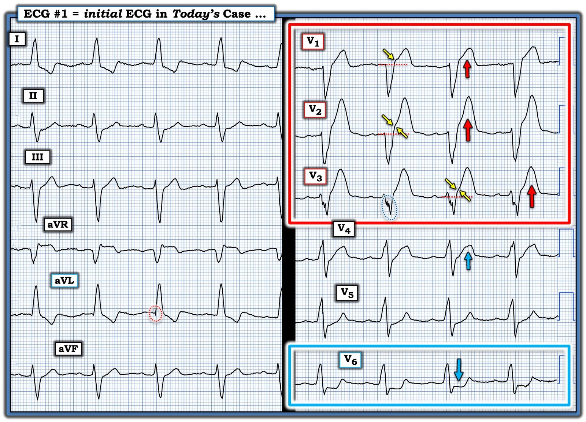